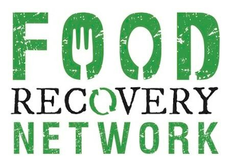

Engineers For A Sustainable World
- Collaborate with a team of 5 full-stack developers to create a web platform using Python (Django) and JavaScript (ReactJS).
- Facilitate the posting and retrieval of excess food for 1,000+ student organizations to reduce food waste.
- Contribute as a key member of the software developer subteam, enhancing platform functionality and user experience.
Women In Computing @ Cornell
- Freshman Year: Co-Treasurer, managing WICC's budgets, sponsorships, and ensuring smooth event execution.
- Sophomore Year: Social Co-Director, organizing workshops, socials, and general body meetings to build a gender-inclusive community.
- Current: Vice President of Community, leading a team of 6 to plan events, workshops, and meetings, fostering a supportive environment for all students.

Food Recovery Network
- Recycle and compost leftover food from dining halls to reduce food waste.
- Volunteer to collect, gather, and store food for distribution to those in need.
- Play an active role in promoting sustainability and addressing food insecurity on campus.

Society of Women Engineers (SWE)
- Engage in professional development events, networking opportunities, and community-building activities.
- Participate in initiatives aimed at supporting and empowering women in engineering.
- Contribute to a vibrant and inclusive community of aspiring and established women engineers.

Running Club Cornell
- Join regular group runs and participate in club-organized races and events.
- Promote a healthy and active lifestyle among Cornell students through running.
- Build camaraderie and friendships with fellow running enthusiasts.

Cornell Astronomical Society
- Attend meetings and discussions on various astronomy and space science topics.
- Observe celestial events using the society's telescopes and equipment.
- Engage with a passionate community of astronomy enthusiasts and experts.